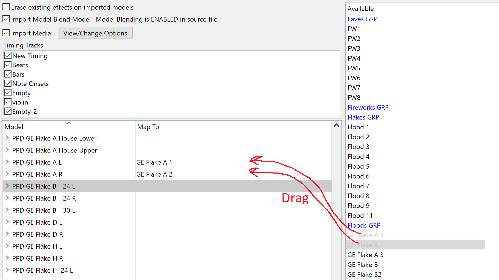
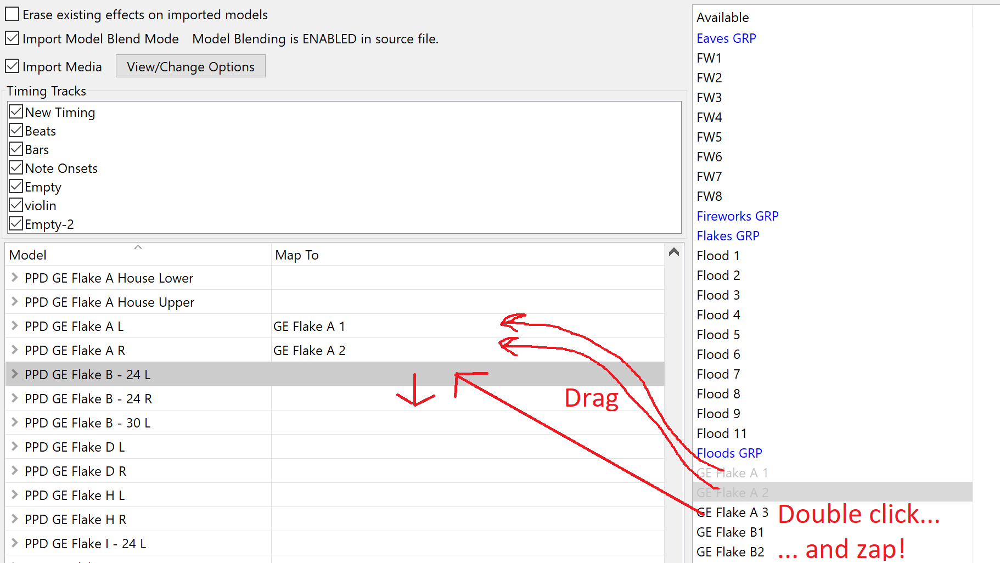

I was watching a video yesterday where the presenter was dragging effects from right to left, one by one, in Import Effects. (By the way, take care to avoid dragging over the grid header, as in some versions of xLights this resets the grid to the top and your place will be lost.)
It's often quicker to select a cell on the left, and double click on the right. This will zap the clicked effect over to the left, and advance the selection on the left so you can just double-click the next item on the right.
